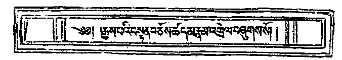
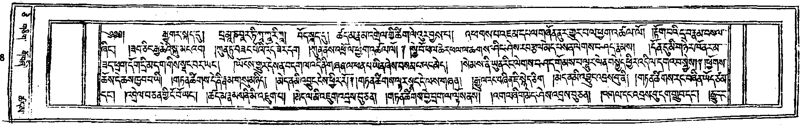
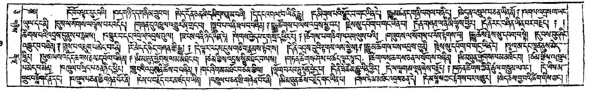

標題頁 (14900189.jpg)

14900189.jpg
प्रमाणवार्तिकम् [cite: 7]
༄༅། །རྒྱས་པའི་བསྟན་བཅོས་ཚད་མ་རྣམ་འགྲེལ་བཞུགས་སོ། ། [cite: 5]
釋量論 [cite: 6]
第一頁 (14900190.jpg)

14900190.jpg
【禮讚文 1】
विधूतकल्पनाजालगम्भीरोदारमूर्तये। नमः समन्तभद्राय समन्तस्फरणत्विषे॥१॥ [cite: 7]
༄༅༅། །རྒྱ་གར་སྐད་དུ། པྲ་མཱ་ཎ་བཱར་ཏི་ཀཱ་ཀཱ་རི་ཀཱ། བོད་སྐད་དུ། ཚད་མ་རྣམ་འགྲེལ་གྱི་ཚིག་ལེའུར་བྱས་པ། འཕགས་པ་འཇམ་དཔལ་གཞོན་ནུར་གྱུར་པ་ལ་ཕྱག་འཚལ་ལོ། །རྟོག་པའི་དྲ་བ་རྣམ་བསལ་ཞིང་། །ཟབ་ཅིང་རྒྱ་ཆེའི་སྐུ་མངའ་བ། །ཀུན་ཏུ་བཟང་པོའི་འོད་ཟེར་དག །ཀུན་ནས་འཕྲོ་ལ་ཕྱག་འཚལ་ལོ། ༈ ། [cite: 5]
札瑪拿哇帝嘎嘎日依嘎（梵語）※ 敬禮聖曼殊室利童子
敬禮於具足 除滅分別網 甚深廣大身 遍放普賢光 [cite: 6]
【禮讚文 2】
प्रायः प्राकृतसक्तिरप्रतिबलप्रज्ञो जनः केवलम् नानर्थ्येव सुभाषितैः परिगतो विद्वेष्ट्यपीर्ष्यामलैः। तेनायं न परोपकार इति नश्चिन्तापि चेतश्चिरम् सूक्ताभ्यासविवर्धितव्यसनमित्यत्रानुबद्धस्पृहम्॥२॥ [cite: 7]
སྐྱེ་བོ་ཕལ་ཆེར་ཕལ་ལ་ཆགས་ཤིང་ཤེས་རབ་རྩལ་མེད་པས་ན་ལེགས་བཤད་རྣམས། །དོན་དུ་མི་གཉེར་ཁོ་ནར་མ་ཟད་ཕྲག་དོག་དྲི་མ་དག་གིས་སྡང་བར་ཡང་། །ཡོངས་གྱུར་དེས་ན་བདག་ལ་འདི་ནི་གཞན་ལ་ཕན་པ་ཡིན་ཞེས་བསམ་པའང་མེད། །སེམས་ནི་ཡུན་རིང་ལེགས་བཤད་གོམས་པ་ལྷུར་ལེན་བསྐྱེད་ཕྱིར་འདི་ལ་དགའ་བ་སྐྱེས། ༈ ། [cite: 5]
眾生多著庸俗論 由其無有般若力
非但不求諸善說 反由嫉妒起瞋恚
故我無意謂此論 真能利益於他人
然心長樂習善說 故於此論生歡喜 [cite: 6]
【第 1 頌】
पक्षधर्मस्तदंशेन व्याप्तो हेतुस्त्रिधैव सः। अविनाभावनियमाद्धेत्वाभासास्ततोऽपरे॥१॥ [cite: 2]
ཕྱོགས་ཆོས་དེ་ཆས་ཁྱབ་པ་ཡི། །གཏན་ཚིགས་དེ་ནི་རྣམ་གསུམ་ཉིད། །མེད་ན་མི་འབྱུང་ངེས་ཕྱིར་རོ། ༈ །གཏན་ཚིགས་ལྟར་སྣང་དེ་ལས་གཞན། ། [cite: 5]
自義比量品第一
宗法彼分遍 是因彼唯三 無不生定故 似因謂所餘 [cite: 6]
【第 2 頌】
कार्य स्वभावैर्यावद्भिरविनाभावि कारणे हेतुः स्वभावे भावोऽपि भावमात्रानुरोधिनि॥२॥ [cite: 2]
རྒྱུ་ལ་རང་བཞིན་ཇི་སྙེད་ཅིག །མེད་ན་མི་འབྱུང་འབྲས་བུ་ནི། །གཏན་ཚིགས་རང་བཞིན་ཡོད་ཙམ་དང་། །འབྲེལ་པ་ཅན་གྱི་ངོ་བོ་ཡང་། ། [cite: 5]
因法所有性 若無則不生 此果是正因
若與唯有性 繫屬體亦爾 [cite: 6]
【第 3 頌】
अप्रवृत्तिः प्रमाणानाम् अप्रवृत्तिफ़लाऽसति। असज्ज्ञानफ़ला काचिद् हेतुभेदव्यपेक्षया॥३॥ [cite: 2]
ཚད་མ་རྣམས་ནི་མི་འཇུག་པ། །མེད་ལ་མི་འཇུག་འབྲས་བུ་ཅན། །གཏན་ཚིགས་བྱེ་བྲག་ལ་ལྟོས་ནས། །འགའ་ཞིག་མེད་ཤེས་འབྲས་བུ་ཅན། ། [cite: 5]
若諸量不轉 於無而不轉 為果是正因
觀待於差別 知某無為果 [cite: 6]
【第 4 頌 (前半部)】
विरुद्धकार्योः सिद्धिरसिद्धिर्हेतुभावयोः। [cite: 2]
འགལ་དང་འབྲས་བུ་དག་གྲུབ་དང་། །རྒྱུ་དང་ [cite: 5]
相違與果成 因及體可見 [cite: 6]
第二頁 (14900191.jpg)

14900191.jpg
【第 4 頌 (後半部)】
दृश्यात्मनोरभावार्थानुपलब्धिश्चतुर्विधा॥४॥ [cite: 2]
ངོ་བོ་བལྟར་རུང་བའི། །བདག་ཉིད་དག་ནི་མ་གྲུབ་པ། །མེད་དོན་ཅན་མི་དམིགས་རྣམ་བཞི། ། [cite: 5]
體生不成就 是為無義者 不可得四種 [cite: 6]
【第 5 頌】
तद्विरुद्धिनिमित्तस्य योपलब्धिः प्रयुज्यते। निमित्तयोर्विरुद्धत्वाभावे सा व्यभिचारिणी॥५॥ [cite: 2]
དེ་དང་འགལ་བ་ཡི་ནི་རྒྱུ། །དམིགས་པའི་སྦྱོར་བ་གང་ཡིན་དེ། །རྒྱུ་མཚན་དག་ནི་འགལ་བ་ཉིད། །མེད་ན་འཁྲུལ་པ་ཅན་ཡིན་ནོ། ༈ ། [cite: 5]
以彼相違因 可得為量式 因由相違性 無則是錯亂 [cite: 6]
【第 6 頌】
इष्टं विरुद्धकार्येऽपि देशकालाद्यपेक्षणम्। अन्यथा व्यभिचारि स्यात् भस्मेवाशीतसाधने॥६॥ [cite: 2]
འགལ་འབྲས་ལ་ཡང་ཡུལ་དང་ནི། །དུས་ལ་སོགས་ལ་ལྟོས་པར་འདོད། །གཞན་དུ་འཁྲུལ་འགྱུར་མི་གྲང་བ། །སྒྲུབ་པ་ལ་ནི་ཐལ་བ་བཞིན། ༈ ། [cite: 5]
其相違果中 亦待處時等 餘則成錯亂 如灰成不冷 [cite: 6]
【第 7 頌】
हेतुना यः समग्रेण कायात्पादोऽनुमीयते। अर्थान्तरानपेक्षत्वात् स स्वभावोऽनुवर्नितः॥७॥ [cite: 2]
རྒྱུ་ཚོགས་པ་ལས་འབྲས་སྐྱེ་བར། །རྗེས་སུ་དཔོག་པ་གང་ཡིན་པ། །དོན་གཞན་ལ་ནི་མི་ལྟོས་ཕྱིར། །དེ་ནི་རང་བཞིན་ཡིན་པར་བརྗོད། ༈ ། [cite: 5]
所有從因聚 比知能生果 不待餘義故 說彼是自性 [cite: 6]
【第 8 頌】
सामग्रीफ़लशक्तीनां परिणामानुबन्धिनि। अनैकान्तिकता कार्ये प्रतिबन्धस्य सम्भवात्॥८॥ [cite: 2]
ཚོགས་པའི་འབྲས་བུ་ནུས་པ་རྣམས། །འགྱུར་བ་དང་འབྲེལ་འབྲས་བུ་ལ། །མ་ངེས་པ་ནི་ཉིད་ཡིན་ཏེ། །གེགས་བྱེད་པ་དག་སྲིད་ཕྱིར་རོ། ༈ ། [cite: 5]
因聚生果力 轉變相繫時 於果不決定 容有障礙故 [cite: 6]
【第 9 頌】
एकसामग्र्यधीनस्य रूपादे रसतो गतिः। हेतुधर्मानुमानेन धूमेन्धनविकारवत्॥९॥ [cite: 2]
ཚོགས་པ་གཅིག་ལ་རག་ལུས་པའི། །གཟུགས་ལ་སོགས་པ་རོས་རྟོགས་པ། །རྒྱུ་ཆོས་རྗེས་སུ་དཔག་པ་སྟེ། །དུ་བས་བུད་ཤིང་འགྱུར་བ་བཞིན། ༈ ། [cite: 5]
同依一聚者 由味知色等 是比知因法 如煙知柴變 [cite: 6]
【第 10 頌】
शक्तिप्रवृत्त्या न विना रसः सैवान्यकारणम्। इत्यतीतैककालानां गतिस्तस्तत्कार्यलिङ्गजा॥१०॥ [cite: 2]
ནུས་པ་འཇུག་པ་མེད་པར་ནི། །རོ་མེད་དེ་ཉིད་གཞན་གྱི་རྒྱུ། ༈ །དེ་ལྟར་འདས་དུས་གཅིག་རྣམས་རྟོགས། །དེ་ནི་འབྲས་བུའི་རྟགས་ལས་སྐྱེས། ༈ ། [cite: 5]
能未轉無味 此即是餘因 如是過去時 了知是一者 是從果因起 [cite: 6]
【第 11 頌】
हेतुना योऽसमग्रेण कार्योत्पादोऽनुमीयते। तच्छेषवदसामर्थ्याद् देहाद् रागानुमानवत्॥११॥ [cite: 2]
རྒྱུ་མ་ཚོགས་པས་འབྲས་བུ་ནི། །རྗེས་སུ་དཔོག་པ་གང་ཡིན་དེ། །ལྷག་མ་དང་ལྡན་ནུས་མེད་ཕྱིར། །ལུས་ལས་འདོད་ཆགས་རྗེས་དཔོག་བཞིན། ༈ ། [cite: 5]
由因未和合 比知其果者 有餘無能故 如由身比貪 [cite: 6]
【第 12 頌】
विपक्षेऽदृष्टिमात्रेण कार्यसामान्यदर्शनात्। हेतुज्ञानं प्रमाणाभं वचनाद् रागितादिवत्॥१२॥ [cite: 2]
མི་མཐུན་ཕྱོགས་ལ་མ་མཐོང་བ། །ཙམ་གྱིས་འབྲས་སྤྱི་མཐོང་བ་ལས། །གཏན་ཚིགས་ཤེས་པ་ཚད་ལྟར་སྣང་། །ཚིག་ལས་ཆགས་ཅན་ལ་སོགས་བཞིན། ། [cite: 5]
唯異品未見 而見其總果 因智是似量 如語比貪等 [cite: 6]
【第 13 頌】
न चादर्शनमात्रेण विपक्षेऽव्यभिचारिता। सम्भाव्यव्यभिचारित्वात् स्थालीतण्डुलपाकवत्॥१३॥ [cite: 2]
མི་མཐུན་ཕྱོགས་ལ་མ་མཐོང་བ། །ཙམ་གྱིས་འཁྲུལ་པ་མེད་པ་མིན། །འཁྲུལ་པ་སྲིད་པ་ཅན་ཉིད་ཕྱིར། །ཕྲུ་བའི་འབྲས་ནི་ཚོས་པ་བཞིན། ༈ ། [cite: 5]
唯異品不見 非即無錯誤 容有錯誤故 如比釜飯熟 [cite: 6]
【第 14 頌】
यस्यादर्शनमात्रेण व्यतिरेकः प्रदर्श्यते। तस्य संशयहेतुत्वाच्छेषवत् तदुदाहृतम्॥१४॥ [cite: 2]
གང་ཞིག་མ་མཐོང་བ་ཙམ་གྱིས། །ལྡོག་པ་རབ་ཏུ་སྟོན་བྱེད་པ། །དེ་ནི་ཐེ་ཚོམ་རྒྱུ་ཡིན་ཕྱིར། །དེ་ལ་ལྷག་མ་ལྡན་ཞེས་བརྗོད། ༈ ། [cite: 5]
若唯以不見 便說遮止者 此是疑因故 說彼名有餘 [cite: 6]
【第 15 頌】
हेतोस्त्रिष्वपि रूपेषु निश्चयस्तेन वर्णितः। असिद्धविपरीतार्थव्यभिचारिविपक्षतः॥१५॥ [cite: 2]
གཏན་ཚིགས་ཀྱི་ནི་ཚུལ་གསུམ་ལའང་། །དེ་ཡིས་མ་གྲུབ་བཟློག་དོན་དང་། །འཁྲུལ་པ་ཅན་གྱི་གཉེན་པོར་ནི། །ངེས་པ་བརྗོད་པར་མཛད་པ་ཡིན། ། [cite: 5]
於因三相中 為對治不成 違義與錯亂 故說須決定 [cite: 6]
【第 16 頌】
व्यभिचारिविपक्षेण वधर्म्यवचनं च यत्। यद्यदृष्टिफ़लं तच्च तदनुक्तेऽपि गम्यते॥१६॥ [cite: 2]
འཁྲུལ་པ་ཅན་གྱི་གཉེན་པོར་ནི། །མི་མཐུན་ཆོས་བརྗོད་གང་ཡིན་པ། །གལ་ཏེ་མ་མཐོང་འབྲས་ཅན་དེ། །དེ་མ་སྨོས་ཀྱང་རྟོགས་པར་འགྱུར། ། [cite: 5]
錯亂對治中 所說異品法 若不見為果 不說亦能知 [cite: 6]
【第 17 頌 (本頁包含第一句)】
न च नास्तीति वचनात् तन्नास्त्येव यथा यदि। नास्ति स ख्याप्यते न्यायस्तदा नास्तीति गम्यते॥१७॥ [cite: 3]
མེད་ཅེས་བྱ་བའི་ཚིག་གིས་ཀྱང༌། །དེ་མེད་ཁོ་ན་མིན་གལ་ཏེ། །ཇི་ལྟར་མེད་རིགས་དེ་བརྗོད་ན། །དེ་ཚེ་མེད་ཅེས་བྱ་བར་རྟོགས། ། [cite: 1]
說無之語言 非顯彼唯無 若說無應理 爾乃知為無 [cite: 2]